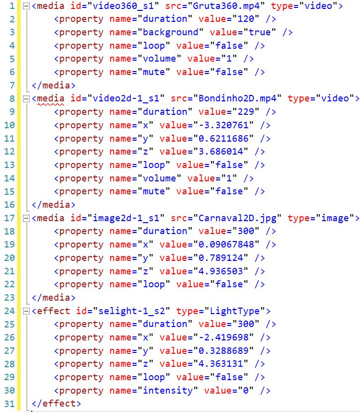
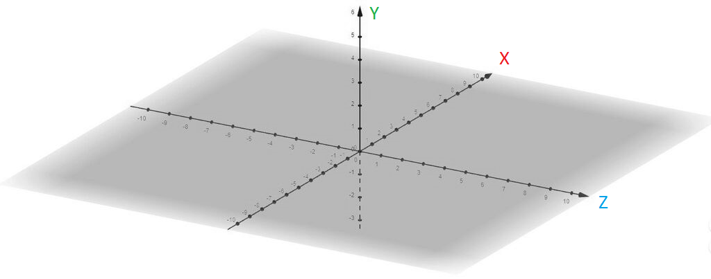

A imagem abaixo mostra exemplos de como se especificam mídias e ES.
A tag media é usada para representar mídias como vídeo, áudio, imagem e texto, por exemplo:
A tag effect é usada para representar efeitos sensoriais (ES) de vento, calor ou vibração, por exemplo:
Tanto as mídias quanto os ES possuem atributos id como identificador único e type (tipo) para definir o tipo de mídia. As mídias também possuem o atributo src que define a URL do arquivo.
Atualmente o AMUSE VR suporta os efeitos de vento, calor e vibração.
As tags property são usadas para definir as características da mídia ou efeito sensorial.
Todas as tags property possuem o atributo name, que define o nome da propriedade, e o atributo value, que define o conteúdo. A seguir os tipos de propriedades de mídia e efeito sensorial:
| Tag | Name | Value | Descrição |
|---|---|---|---|
| Mídia<media> | duration | int+ | representa o tempo de apresentação/execução da mídia na cena em segundos |
| background | bool | exibir o conteúdo de um vídeo ou imagem no fundo da apresentação, indicados para conteúdos em 360 graus | |
| pip | bool | exibir o conteúdo de um vídeo ou imagem no em uma janela fixa a frente do campo de visão do usuário, indicados para conteúdos como legendas ou exibição de tradução de libras | |
| loop | bool | quando ativo, repete a execução da mídia indefinidamente | |
| volume | float+ | em uma escala de 0 a 1, controla o volume do áudio ou do vídeo | |
| mute | bool | quando ativo, torna o áudio ou vídeo mudo | |
| text | string | representa o texto a ser exibido pela mídia | |
| x | float | representa a posição no sentido x do plano cartesiano da cena | |
| y | float | representa a posição no sentido y do plano cartesiano da cena | |
| z | float | representa a posição no sentido z do plano cartesiano da cena | |
| Efeito Sensorial<effect> | duration | int+ | representa o tempo de execução do efeito sensorial na cena em segundos |
| intensity | float+ | em uma escala de 0 a 1, controla a intensidade da emissão ou trabalho do atuador do efeito sensorial | |
| x | float | representa a posição no sentido x do plano cartesiano da cena | |
| y | float | representa a posição no sentido y do plano cartesiano da cena | |
| z | float | representa a posição no sentido z do plano cartesiano da cena |
As mídias do tipo vídeo e imagem podem ser apresentadas de diversas formas. Para diferenciar a apresentação, existe uma tag property própria para essa finalidade. A seguir os tipos de apresentações possíveis dessas mídias:
Como limitação da cena, é possivel somente usar uma tag property com o atributo name=”background” e value=”true” por cena, além disso, não é permitido o atributo name=”background” e o atributo name=”pip” para a mesma mídia. Mídias com propriedade ”background” ou ”pip”, não devem ser interativas para evitar interações involuntárias pelo usuário.
Para todos os outros casos de mídia e ES, deve-se omitir as tags citadas e descrever a posição no cenário 3D com os valores x, y e z em valores reais, como nas linhas 10, 11 e 12 do exemplo. As demais propriedades exibidas nos exemplos com name igual a duration, volume e loop são opcionais, porém recomendadas.
Todas as mídias ou efeitos sensoriais inclusos na cena, terão suas faces ajustadas automaticamente para melhor visualização do usuário, não precisando se preocupar com rotação ou até mesmo distribuição espacial de efeitos sensoriais e áudios. Mas é preciso indicar as posições x, y e z da mídia ou ES.
Ao iniciar a cena, o usuário encontra-se no ponto central do plano cartesiano (x=0.0, y=0.0 e z=0.0) assim como na figura. Onde inicialmente a frente do centro do usuário fica voltada para o sentido z com valores positivos (em azul na figura) e as costas do centro do usuário voltadas para o sentido z com valores negativos. Acima do centro do usuário é o sentido dos valores y positivos (em verde na figura) e abaixo do centro do usuário é o sentido dos valores y negativos. Por fim, os valores do sentido do eixo x à direita são positivos (em vermelho na figura) e o sentido x à esquerda do centro são negativos. Para representar a distância em cada sentido, utilizam-se unidades com valores reais, onde cada unidade (1.0) equivale no projeto, a aproximadamente 1 metro no mundo real (ver figura abaixo).
